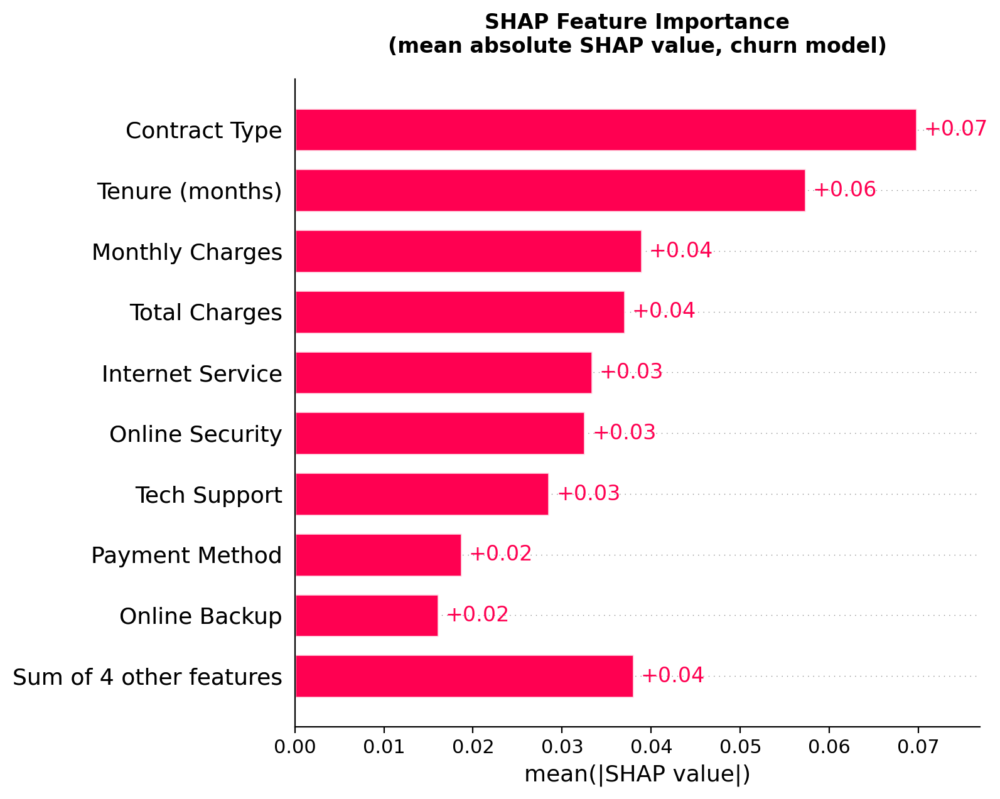
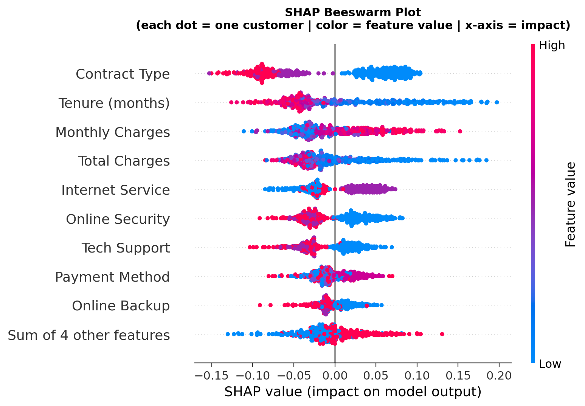
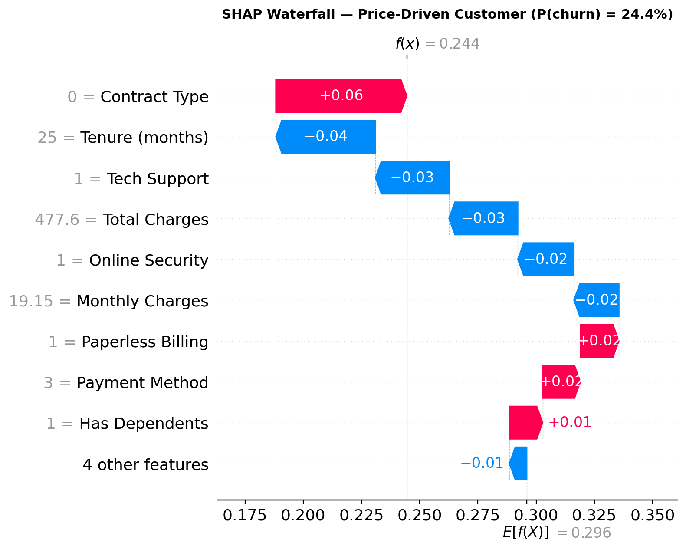
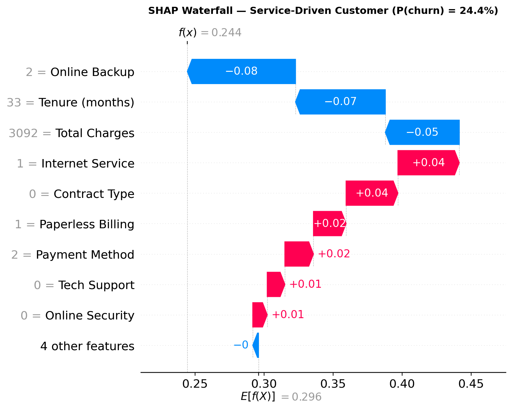

Your Churn Model Knows Who's Leaving.
It Doesn't Know Why.
A risk score tells you who is about to churn. It doesn't tell you what to do about it. Here's how to pair a churn model with SHAP to get a reason alongside every score, then route each customer to the intervention that actually fits, using the real IBM Telco Customer Churn dataset.
A Score Isn't a Reason
A few years ago I watched a retention team run the same play on every at-risk customer: a 20% discount, sent the moment the churn score crossed a threshold. It worked, some of the time. For customers price-shopping a competitor, it was exactly the right move. For a customer who'd never figured out how to use the product, the discount changed nothing. They churned anyway, a little later, at a lower price.
That's the gap in a lot of churn models, including some clients already have running when I meet them. The model is well built. It scores risk accurately. And it's still barely more useful than no model at all, because everyone above the threshold gets the same offer, and that offer only fits a fraction of them.
A risk score tells you who is about to leave. It doesn't tell you why. The fix is one layer deeper than the score: pair the risk score with a reason, using the same per-customer SHAP values covered in the SHAP tutorial elsewhere in this series, applied here to churn instead of credit risk.
Setup and Imports
import warnings
warnings.filterwarnings('ignore')
import pandas as pd
import numpy as np
import matplotlib.pyplot as plt
import shap
from sklearn.ensemble import RandomForestClassifier
from sklearn.model_selection import train_test_split
from sklearn.metrics import classification_report
from sklearn.preprocessing import LabelEncoder
# Install if needed:
# pip install shap scikit-learn pandas numpy matplotlibLoad Data and Train the Model
This tutorial uses the real IBM Telco Customer Churn dataset, 7,043 customers, publicly available and widely used as a churn benchmark. Unlike the LendingClub series elsewhere on this site, nothing here is synthetic.
df = pd.read_csv('telco_churn.csv')
df['TotalCharges'] = pd.to_numeric(df['TotalCharges'], errors='coerce')
df = df.dropna(subset=['TotalCharges'])
df['Churn'] = (df['Churn'] == 'Yes').astype(int)
print(f"Dataset: {len(df):,} customers | Churn rate: {df['Churn'].mean():.1%}")
FEATURES = [
'tenure', 'MonthlyCharges', 'TotalCharges', 'Contract', 'PaymentMethod',
'InternetService', 'TechSupport', 'OnlineSecurity', 'OnlineBackup',
'SeniorCitizen', 'Partner', 'Dependents', 'PaperlessBilling'
]
X = df[FEATURES].copy()
y = df['Churn']
# Encode categoricals; keep numeric features as-is
encoders = {}
for col in X.select_dtypes(include='object').columns:
le = LabelEncoder()
X[col] = le.fit_transform(X[col])
encoders[col] = le
X_train, X_test, y_train, y_test = train_test_split(
X, y, test_size=0.2, random_state=42, stratify=y
)
rf = RandomForestClassifier(
n_estimators=500, random_state=42, n_jobs=-1, class_weight='balanced'
)
rf.fit(X_train, y_train)
print(classification_report(y_test, rf.predict(X_test),
target_names=["Stayed", "Churned"]))class_weight='balanced' matters here. Churners are a minority class (26.6%), the same imbalance trap covered in the imbalanced classes tutorial. Without correcting for it, the model would lean toward predicting "stayed" for nearly everyone and still look accurate.
Compute SHAP Values
Same tool as the SHAP tutorial, shap.TreeExplainer, applied to a Random Forest instead of the credit model. The explainer computes a value for every customer, every feature, at once, per-customer values come for free the moment you run it.
background = shap.maskers.Independent(X_train, max_samples=100)
explainer = shap.TreeExplainer(rf, background)
X_sample = X_test.sample(500, random_state=42)
shap_vals = explainer(X_sample, check_additivity=False)
# shap_vals[:, :, 1] = SHAP values for class 1 (churn)
sv = shap_vals[:, :, 1]
importance = pd.Series(
np.abs(sv.values).mean(axis=0), index=X_sample.columns
).sort_values(ascending=False)
print(importance.round(4))Global Importance and Beeswarm
Before splitting customers into individual reasons, the global view: which features drive churn across the whole portfolio, on average.


Building the Taxonomy from Real Columns
The taxonomy from the companion article sorts churn reasons into five categories. This dataset is a single snapshot with no usage-over-time signal and no support-ticket log, so it genuinely supports four of the five. The mapping below uses this dataset's actual columns, decided once, up front, not re-decided per customer.
Contract Type · Monthly Charges · Total Charges · Payment Method
A month-to-month contract is a low-switching-cost customer who hasn't committed, the closest proxy this dataset has to active price comparison.
Tenure · Online Security · Online Backup
Short tenure combined with low adoption of add-on services reads as a customer who never settled in, not one actively shopping on price.
Internet Service · Tech Support
Fiber optic service in this dataset carries a documented, disproportionately high churn rate, the closest available proxy for service-quality complaints.
Senior Citizen · Has Partner · Has Dependents
Demographic proxies for a change in household circumstances, weak signals individually, genuinely present as the dominant driver for a real minority of customers.
One Feature Decides the Bucket
Routing an individual customer to a bucket is mechanical once the mapping exists: find their single largest positive SHAP contributor, the feature actually pushing them toward churn, and match it to that feature's bucket.
BUCKET_MAP = {
'Contract Type': 'Price sensitivity',
'Monthly Charges': 'Price sensitivity',
'Total Charges': 'Price sensitivity',
'Payment Method': 'Price sensitivity',
'Tenure (months)': 'Underuse / no habit formed',
'Online Security': 'Underuse / no habit formed',
'Online Backup': 'Underuse / no habit formed',
'Internet Service': 'Service or product friction',
'Tech Support': 'Service or product friction',
'Senior Citizen': 'Life-stage / need change',
'Has Partner': 'Life-stage / need change',
'Has Dependents': 'Life-stage / need change',
}
def route_customer(shap_row, feature_names):
positive_mask = shap_row > 0
if not positive_mask.any():
return 'No dominant risk driver', None, None
pos_idx = np.where(positive_mask)[0]
idx = pos_idx[np.argmax(shap_row[pos_idx])]
top_feat = feature_names[idx]
return BUCKET_MAP.get(top_feat, 'Unmapped'), top_feat, shap_row[idx]"Unmapped" is Paperless Billing, the one feature that doesn't cleanly belong to any of the four categories. Left unmapped on purpose rather than force-fit into a bucket it doesn't really describe, that's the honest answer, not a design flaw.
Sanity check: does the routing track actual outcomes?
| Bucket | Customers | Actual churn rate |
|---|---|---|
| Underuse / no habit formed | 156 | 30.1% |
| Unmapped (Paperless Billing) | 21 | 33.3% |
| Price sensitivity | 236 | 28.0% |
| Life-stage / need change | 44 | 25.0% |
| Service or product friction | 20 | 25.0% |
| No dominant risk driver | 23 | 13.0% |
"No dominant risk driver" customers actually churned least, 13.0% versus the 26.6% portfolio average, exactly as expected: these are customers whose SHAP contributors were all protective. The routing is behaving the way the mechanism says it should.
Two Customers, Same Score, Different Reason
Two real customers from the test sample, both landing at an identical 24.4% predicted churn probability. Same number, same urgency by score alone. Their top positive contributors point in completely different directions.


| Feature | Price-driven customer | Service-driven customer |
|---|---|---|
| Predicted churn probability | 24.4% | 24.4% |
| Contract | Month-to-month | Month-to-month |
| Internet service | None (phone only) | Fiber optic |
| Monthly charges | $19.15 | $93.35 |
| Tenure | 25 months | 33 months |
| Top positive SHAP contributor | Contract Type, +0.06 | Internet Service, +0.04 |
Five Campaigns, Not Five Thousand
None of this means building a bespoke plan for each of 7,032 customers. It means sorting the whole base into the four buckets this dataset supports and building one intervention per bucket, four campaigns, not thousands. What varies per customer is only which bucket they land in and the specific values that fill that bucket's template, their own contract type, their own service tier, not the underlying strategy.
Two levels of SHAP are doing two different jobs here. The global ranking (Figure 1) says which category matters most company-wide, useful for deciding which bucket's intervention to build and budget for first. The per-customer routing (Section 7) is what actually assigns each individual to a bucket. A single blanket intervention built off "Contract Type is the top driver overall" would spend budget on customers whose real driver is something else entirely, and miss the ones a completely different fix could have saved.
# In production: batch-score nightly, write bucket + top driver back to the CRM record
# rather than recomputing SHAP on demand for every customer service call.
routed = []
for i in range(len(X_sample)):
bucket, top_feat, top_val = route_customer(sv.values[i], list(X_sample.columns))
routed.append({
'risk_score': probs[i],
'bucket': bucket,
'top_driver': top_feat,
})
# routed is what gets written back, ready to read whenever someone
# needs the "why," not just the "how likely."Honest Limitations
This is a real, working example on real data. It is not the whole picture.
No usage-over-time signal. This dataset is a single snapshot. "Outgrown the plan," a customer whose usage is climbing toward a ceiling, needs a trend a snapshot cannot show. Left out entirely rather than approximated with a weak proxy.
No support-ticket log. Tech Support and Internet Service stand in for service friction here, but a real support queue with ticket counts and resolution times would be a stronger signal than a categorical add-on flag.
Small samples in some buckets. Service friction and life-stage each routed only 20 to 44 customers out of 500 sampled. That's enough to demonstrate the mechanism, thin enough that a real deployment would want the full customer base, not a 500-row sample, before trusting bucket-level rates.
The model still has to be right. SHAP explains what the model did, not what's true. If the model has learned something wrong, SHAP will faithfully explain a wrong prediction.
Browse all tutorials in Resources.
Back to Resources →